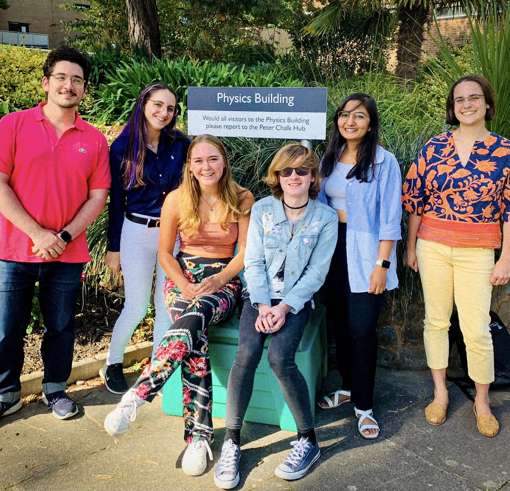
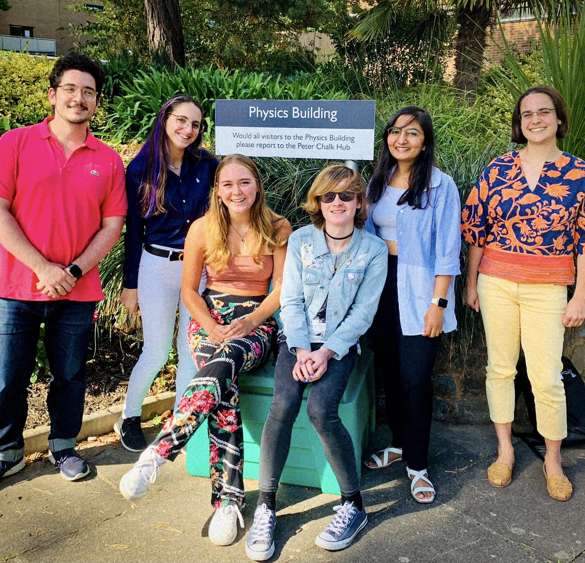

Outreach
- Speaker -- Royal Geological Society of Cornwall
- Speaker -- ESE Outreach live lecture, University of Exeter
- Floating Expert -- British Science Festival: Exeter Science Center
- Volunteer -- Pint of Science, Exeter
- Speaker -- Exoclimes lightning talks: Organised by Exeter Science Center
- Specialist -- Public Dialogue, Eden Project: Organised by Royal Society & Ipsos
- Scientists Speaker -- What GAIA means to us? - Exeter Science Center
- Guest Speaker -- National Space Center, Leicester
- Volunteer -- Exeter Science Centre Pop-up Exhibition
- Guest Speaker -- Links to a Life, Great Torrington School
- Volunteer -- Nuit blanche de l'Astronomie, Paris
- Member of Astronomy and Astrophysics Club -- Cepheid, Indian Institute of Technology
- Mentor - Inspire Internship Programme, Miranda House
 
